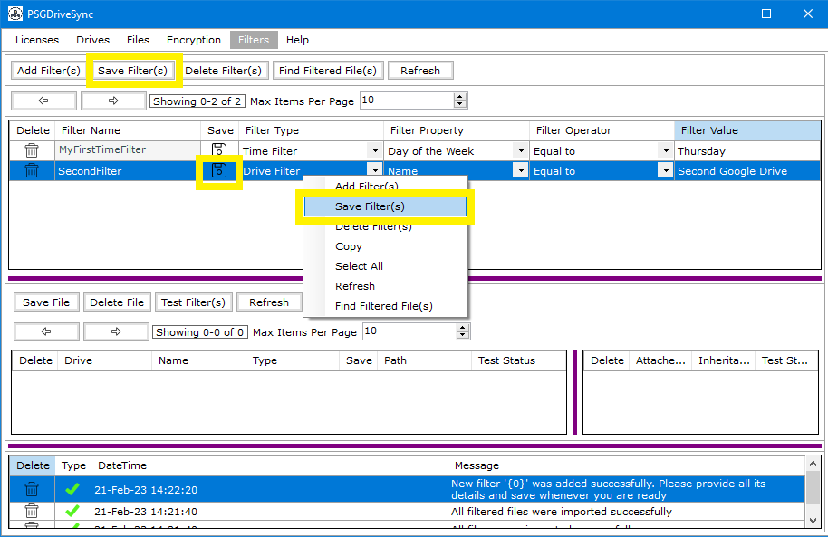

Adding a filter requires its type, property, operator and value to setup along with a unique name. Once a filter gets saved then its name cannot be changed however its type, property, operator and value can always be modified. The followings are the steps needed to be performed in order to add a filter in the application.
|
1 |
Go to the "Filters" window and click on "Add Filter(s)" |
|
|
2 |
A new filter row should generate right after. This row now needs to be populated with the new filter's name, type, property, operator and value. Go ahead and add all the details for this new filter. |
|
|
3 |
Now you can click on "Save" to save the filter details. |
 |
|
4 |
The result of the "Save" operation should show in the message window. |